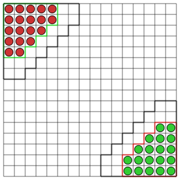

Halma
Based on the classic game of Halma.
How to play
The board
The game is played on a 16x16 square board. The top left corner has coordinates (1, 1), the square to the right of it has coordinates (2, 1), the square below it - (1, 2) and the bottom right corner of the board - (16, 16).
This game uses 8-connectivity where cells are called adjacent iff they share a side or a corner. In other words, different cells (x, y) and (p, q) are adjacent iff |x-p| ≤ 1 && |y-q| ≤ 1.
This adjacency counts for both step moves and jumps (see below).
Initial position

Moves
Players alternate their moves, starting from the red player at the top of the grid.
During their turn a player is allowed to move exactly one of their pieces to a new unoccupied space, in either of the two ways:
- Move it to an adjacent unoccupied cell.
- Perform an arbitrarily long series of jumps. During each jump the piece moves 2 spaces in a any direction, over an olready occupied cell into an unoccupied cell, in one of the 8 directions. The piece can not re-visit cell that were already visited by it during this move. Jump direction can be changed between jumps.
End of the game
There are three ways the game ends
- One of the players moves all their pieces "home" - the area diagonally-opposite their starting position. The player that has moved all their pieces "home" is considered victorious and is awarded 2 points.
- After both players make 100 moves, one or both players have a piece blocking the opponent's home, or any of the squares near it, i.e. a piece that hasn't left the starting triangle and the 2-cell wide, 15-cell strip adjacent to it. Such players are declared "blockers". If only one player is a blocker, their opponent is declared a winner and is awarded 2 points. If both players are blockers, the game is a draw and they are awarded 1 point each.
- After both players made 1000 moves and none of the conditions above are met, the game is considered a draw, and players are awarded 1 point each.
I/O Protocol
- The program must output
ready on a single line at startup.
- The program will receive
start p, where p is the index of the player that this program is playing as (1 <= p <= 2)
- At the beginning of its move, the program will receive a
yourmove command: the single word yourmove on a line.
- The program must output a line containing the move:
move x1 y1 x2 y2 ... Xk Yk - a sequence of coordinates (1 ≤ xi, yi ≤ 16), of length 2*k (k ≥ 2), within 50 milliseconds of receiving the yourmove command. The coordinates mark the beginning of the move, followed by all intermediate jump points, ending with the end point.
- At the end of each turn (both its own and the opponent's), the program will receive a
move x1 y1 x2 y2 ... Xn Yn command specifying a move that was made.
- The program should exit when its standard input is closed.
Example communication sequence for player 1 (the actual contents of stdin and stdout are without "read", "write" or leading spaces or "|" symbols):
write |
readyread |
start 1read |
yourmovewrite |
move 1 3 3 5read |
move 1 3 3 5read |
move 14 16 12 14read |
yourmovewrite |
move 2 2 4 4 2 6...